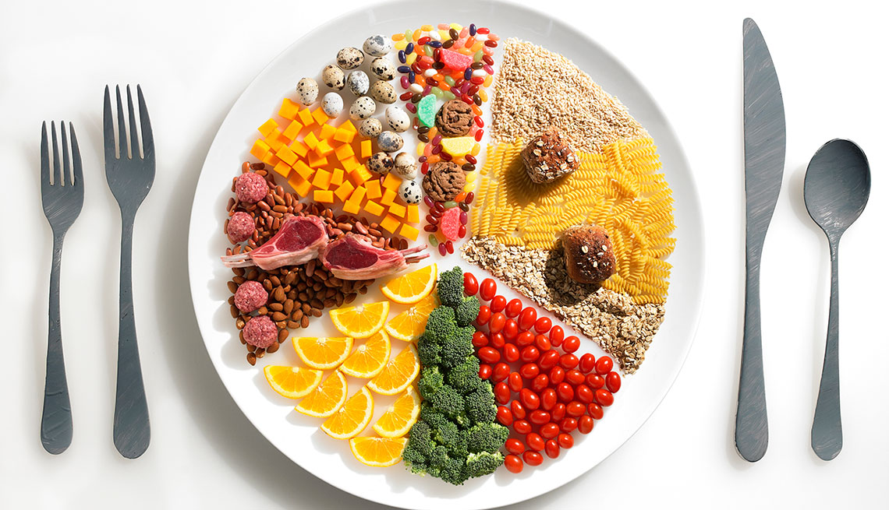

Para el mantenimiento de las funciones orgánicas, el crecimiento y desarrollo es necesario
consumir los alimentos en cantidades adecuadas. Si el organismo no recibe las suficientes
sustancias nutritivas, se producen problemas nutricionales como la anemia y la desnutrición;
si se ingieren en exceso se producen alteraciones como la obesidad, la cual tiende a estar
asociada con enfermedades crónicas degenerativas tales como la diabetes, hipertensión arterial
y las enfermedades cardiovasculares.
La satisfacción de las necesidades de energía y nutrientes, a través de la ingestión de una
alimentación sana, adecuada en cantidad y calidad, garantiza la utilización de los nutrientes
(proteínas, carbohidratos, lípidos o grasas, vitaminas y minerales) que intervienen en los
procesos de crecimiento y desarrollo así como en la reparación de los tejidos.

Los macronutrientes son un grupo de nutrientes, responsables de aportar la mayor parte de energía al organismo,
y compuestos principalmente de carbohidratos, proteínas y grasas.
Son aquellos que se ingieren en grandes cantidades, a diferencia de los micronutrientes,
que se consumen en pequeñas dosis.